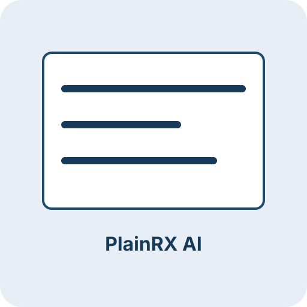

Florida hospital cost explorer
Built on CMS public data, this tool lets you compare what Florida hospitals charge for joint replacements against what Medicare actually pays, broken down by city and region.
Portfolio
Public Health Analyst · Data & Analytics Consultant
Built on CMS public data, this tool lets you compare what Florida hospitals charge for joint replacements against what Medicare actually pays, broken down by city and region.
A Power BI dashboard built on a set Spotify dataset. Search by artist or track, set a date range, and see which songs are pulling the most streams.
Full-stack app that rewrites flyers, FAQs, and handouts to a target reading level in English or Spanish, with optional PDF and Word export and before/after readability scores, powered by Groq.

Public health background with hands-on analytics and research experience. Full timeline on LinkedIn.
Experience in public health research, data, and working with teams across healthcare and community settings.
Additional experience (including earlier retail) is on LinkedIn. See the full timeline on LinkedIn.
How I approach problem solving, communicate findings, and deliver work that teams can act on.
I am naturally curious and I take the work seriously. I want to understand the full picture before I start drawing conclusions.
I build things with the end user in mind. Whether it is a dashboard or a writeup, it needs to be clear enough for someone else to pick up and run with.
The tools depend on the problem. SQL, Python, Power BI, Tableau, Excel, and AI when it is the right call.
Scroll or swipe sideways to see all tools. Tap the edges to nudge the list.
I work across the full pipeline, from cleaning and structuring data to analysis and visualization. I have done that kind of work in public health research and I enjoy it across different domains.
Not many people come into consulting and analytics through public health. It shaped how I think about data, how to frame a problem, and how to communicate findings to people outside the field.
I am looking for a role where analytics actually informs strategy, not just reporting. Consulting and health are the spaces I am most drawn to but the work and the team matter more than the industry.
Python, SQL, Tableau, and Excel with links to repos and public views.

Open to connecting, whether you are a recruiter, collaborator, or just want to chat about the work.
Open LinkedIn profile